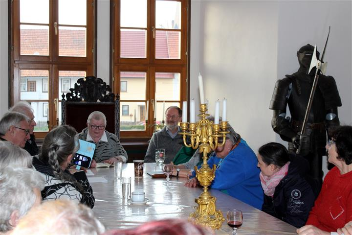

Oberstadt. Am Sonntag, dem 24. März 2019, fanden die Kulturveranstaltungen im Wasserschloss Oberstadt eine Fortsetzung. Erstmals traten dort Südthüringer Autorinnen und Autoren auf und stellten ihre neuesten Texte vor. Mit dabei waren Ursula Schütt aus Dietzhausen, Harald Lindig aus Manebach, Iris Friebel aus Rohr, Sandra und Sandro Eberwein aus Eckental sowie Dietmar Hörnig und Holger Uske aus Suhl. Die Autorinnen und Autoren boten im Rittersaal des Schlosses ein Kaleidoskop literarischer Handschriften. Musikalisch umrahmt wurde die Lesung durch eigene Lieder von Holger Uske. Mehr als 40 interessierte Zuhörerinnen und Zuhörer nahmen dieses Angebot an.
Sandro Eberwein stieg in fränkische Bierkeller hinab – allerdings in einer möglichen Zukunft. Sandra Eberwein offerierte neue Lyrik aus dem vollen Leben. Dietmar Hörnig fragte in seiner bekannt zugespitzten Art „Was bin ich?" Iris Friebel erzählte von einem Elfenfest in ihrem Haus. Harald Lindig begab sich auf poetische Landsuche. Holger Uske lud mit seinen Gedichten zum Lauschen ein und stellte eine leise Liebesgeschichte vor. Ursula Schütt stellte Fabeln in den Mittelpunkt ihrer Textvorstellung.
Armin und Annelies Saupe als Schlossbesitzer hatten den Südthüringer Literaturverein im Vorjahr kontaktiert, um im historischen Ambiente auch regionale Literatur vorzustellen. Mit dem „Schlossgeflüster im Rittersaal" wurde das nun erstmals umgesetzt – für den Verein zugleich Start in seine „Lesereihe 2019". Nach dem Urteil der Gäste wie auch der Schlossbesitzer kam dieses erste literarische „Schlossgeflüster" sehr gut an. Es soll eine Fortsetzung finden.
